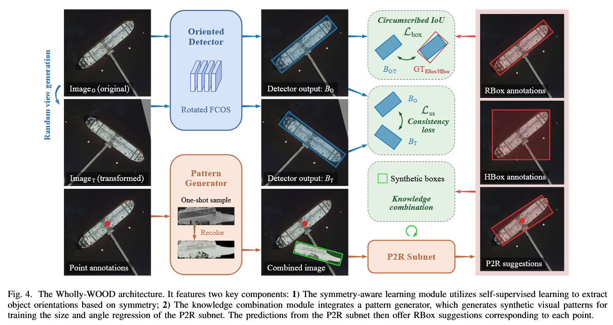
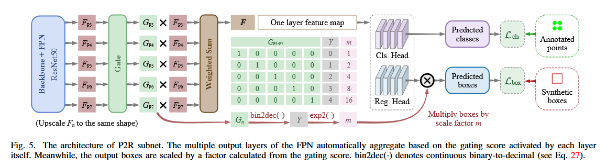

感觉就是把以前的成果缝合了一下。
高情商：把以前的研究成果做了统一的整合，让模型能适应各种场景的应用。

如图所示，Wholly-WOOD 根据输入的类型（点、水平框、旋转框）对它们进行不同的处理。其中只有 P2R Subnet 是新的。
Point2RBox 中：
因为点标注没法提供尺寸相关的信息，所以 backbone 不能用 FPN-based 的 detector 作为 backbone。难得 YOLOF 是只使用一个级别的尺度特征，它使用尺寸 32, 64, 128, 256 和 512 的锚框，它自己的锚框分配逻辑还是不能用。所以只能自己制定分配策略。
用 YOLOF 作为 backbone，但是把它的所有五种 anchor size 调到同一个值（DOTA 是 64，别的是 128），但是 anchor size 不减少。（减少的话会掉点）
但是这样做会掉效率。所以弄了个 P2R Subnet 解决这个问题：

它的主要作用是把 FPN 的多层金字塔合为一体，形成一个单层特征图结构。步骤如下：
计算 Gating 分数
（Gating 分数表示对于每一处特征，这一层融合的时候的重要程度）
其中：
融合多层特征
将上采样后的每个 FPN 层特征乘以对应的 gating 分数 ，再将所有层相加。
融合后的特征图 同时包含了低层细节和高层语义信息，这种自适应加权能够让网络更好地处理不同尺度的目标。
尺度因子的计算
解码尺度信息：
基本思想：这是一个二进制解码器，把 n 位二进制解码成连续光滑的十进制表示。在《On Boundary Discontinuity in Angle Regression Based Arbitrary Oriented Object Detection》出现过。
这个公式的目的是把各层的 gating 分数“解码”为一个数值 ，它反映了各层在尺度信息上的综合“意见”。可以把这个过程想象为利用圆周上的角度加权平均，得到一个代表“尺寸倾向”的值。
最终框预测
其中，尺度因子 定义为：
尺度因子就相当于一个提示——在融合的特征图上，这个框应该被放大多少。